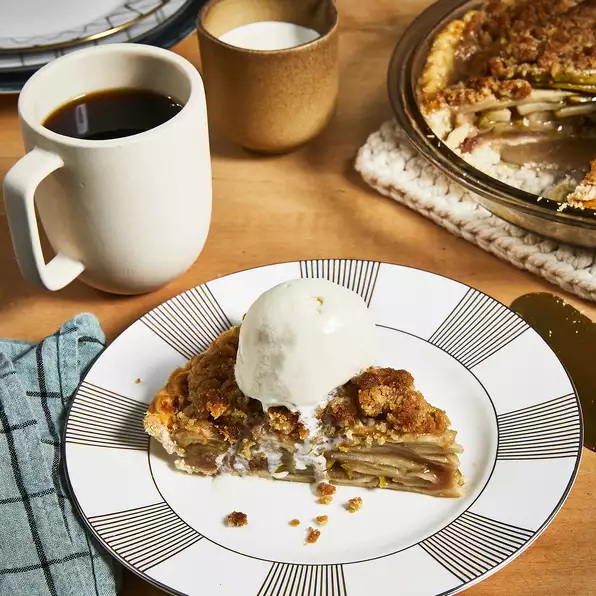

Apple Crumple

Description
This crumb topping for apple pie adds a delicious crunch. You can add walnuts and raisins to this pie to make it even dreamier!
Ingredients
- 6 cups thinly sliced apples
- 1 tablespoon lemon juice (Optional)
- ¾ cup white sugar
- 2 tablespoons all-purpose flour
- ½ teaspoon ground cinnamon
- ⅛ teaspoon ground nutmeg
- 1 (9 inch) pie shell
- ½ cup all-purpose flour
- ½ cup packed brown sugar
- 3 tablespoons butter
Steps
- Preheat the oven to 375 degrees F (190 degrees C).
- Place sliced apples in a large bowl; sprinkle with lemon juice. Mix white sugar, 2 tablespoons flour, cinnamon, and nutmeg together in a small bowl; sprinkle mixture over apples and toss until evenly coated. Stir in raisins and walnuts; transfer mixture into pie shell.
- Mix 1/2 cup flour and brown sugar together in a small bowl. Blend in butter with a fork until mixture is crumbly; sprinkle over apple filling. Cover top of pie loosely with aluminum foil.
- Bake in the preheated oven for 25 minutes. Remove foil and bake until top is golden brown and filling is bubbly, about 25 to 30 minutes more. Cool on a wire rack before serving.
Homepage